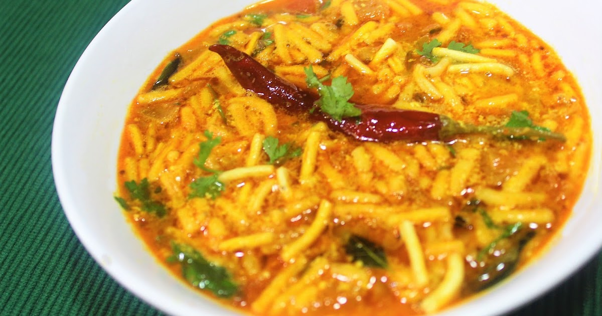

* સામગ્રી:
- 2 કપ ગાંઠિયા
- 2 ચમચી તેલ
- 1 ચમચી જીરું (જીરા)
- 1/2 tsp turmeric powder (haldi)
- 1/2 tsp chilli powder
- 1/2 cup curds (dahi)
- whisked with 1 1/2 cups of water
- salt to taste
- For The Garnish
- 2 tbsp finely chopped coriander (dhania)
|
ગાંઠિયા નુ શાક બનાવવાની રીત:
- ગુજરાતી સ્ટાઈલ ગઢિયા | ભારતીય નમકીન જાર નાસ્તો | ભારતમાં સરળતાથી ઉપલબ્ધ ઘટકોનો ઉપયોગ કરીને
બનાવવામાં આવે છે: 1 3/4 કપ બેસન (બંગાળી ચણાનો લોટ), 1/2 ચમચી પાપડ ખાર, 1 ચમચી મીઠું, 1/2
ચમચી હિંગ (હિંગ), 1 ચમચી કેરમ બીજ (અજવાઇન), 3 tbsp ગરમ તેલ અને તેલ ગ્રીસિંગ અને ડીપ ફ્રાઈંગ
માટે. ગઠિયા માટેના ઘટકોની સૂચિની નીચેની છબી જુઓ.
- એક બાઉલમાં 1/2 કપ દહીં (દહીં) નાખો.
- એક નોન-સ્ટીક કઢાઈમાં 2 ચમચી તેલ ગરમ કરો.
- 1 ટીસ્પૂન જીરું (જીરા) ઉમેરો.
- બીજને તડતડ થવા દો.
- 1/2 ચમચી હળદર પાવડર (હલ્દી) ઉમેરો.
- 1/2 ચમચી મરચું પાવડર ઉમેરો.
- દહીંનું મિશ્રણ ઉમેરો.
- સ્વાદ અનુસાર મીઠું ઉમેરો. અમે xx tsp મીઠું ઉમેર્યું.
- સારી રીતે ભેળવી દો.
- સતત હલાવતા રહીને ઉકાળો જેથી દહીંનું મિશ્રણ ફાટી ન જાય.
- પીરસતા પહેલા ગાંઠિયા ઉમેરો.
- સારી રીતે ભેળવી દો.
- સારી રીતે ભેળવી દો.
- કોથમીરથી સજાવીને ગરમા-ગરમ સર્વ કરો.
|